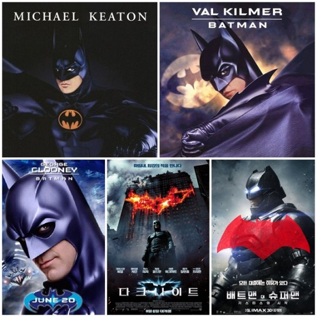
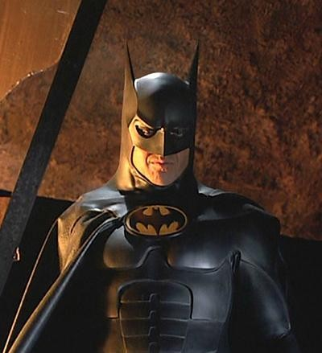
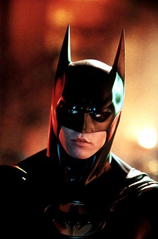
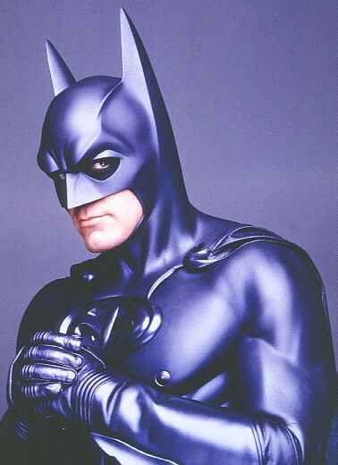
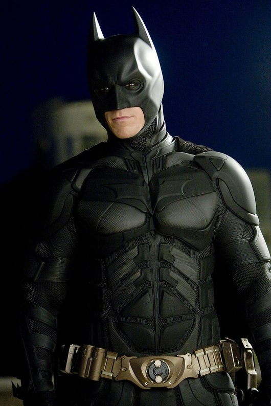
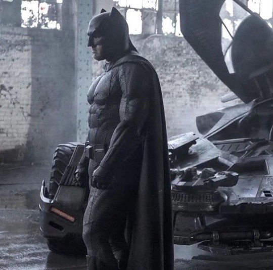

-

키튼? 애플렉? 당신의 배트맨은 누구입니까[배트맨 탐구①]
기사입력2016.04.04. 오전 10:27 -

[OSEN=김경주 기자] 할리우드 배우 벤 애플렉이 5대 배트맨으로 활약 중인 가운데 당신의 배트맨은 누구인가.
가장 강렬한 배트맨을 만들어낸 배우 마이클 키튼부터 발 킬머, 조지 클루니, 크리스찬 베일 그리고 지금의 벤 애플렉까지, 총 5명의 배우들이 각각의 개성을 살린 배트맨으로 히어로 무비 팬들의 취향을 저격한 바 있다.
- # 제1대 배트맨, 마이클 키튼 : '배트맨·배트맨 리턴즈'
-

지난 1989년 시작된 '배트맨' 시리즈에서 배트맨이라는 히어로를 연기한 마이클 키튼은 아직까지도 많은 이들의 기억 속에 남아있는 배우일 것이다.
사실 마이클 키튼의 캐스팅은 순탄치 않았다. 그도 그럴것이 캐스팅 당시 마이클 키튼은 '코믹 배우'로 더 잘 알려져 있었다. 코믹한 이미지가 강한 만큼 배트맨이라는 히어로와는 잘 어울리지 않는다는 것이 캐스팅 논란이 생긴 이유였다.
하지만 우려와는 다르게 마이클 키튼은 인상적인 배트맨을 창조해냈다. 이미 입증된 연기력은 물론, 배트맨과 잘 어울리는 중후한 목소리는 모두가 상상하는 배트맨을 만들어냈다는 평을 이끌어냈다. - # 제2대 배트맨, 발 킬머 : '배트맨 포에버'
-

마이클 키튼이 두 번의 작품에서 배트맨을 연기한 뒤 히어로의 자리를 물려받은 건 발 킬머였다. 지난 1995년 '배트맨 포에버'에 출연하게 되면서 배트맨과 인연을 맺은 발 킬머는 전임 배트맨이었던 마이클 키튼보다 훨씬 밝아진 '꽃미모'로 그만의 배트맨을 만들어냈다.
분명 발 킬머의 배트맨은 매력적이었다. 브루스 웨인이라는 남자를 기본으로 하는 배트맨인만큼 매력적인 브루스 웨인의 모습은 배트맨 시리즈에서는 필수적인 요소였다. 발 킬머는 이를 잘 해냈다.
그러나 아마도 지금까지의 배트맨을 연기한 배우들 중 가장 기억에 남지 않는 배트맨임은 분명하다. - # 제3대 배트맨, 조지 클루니 : '배트맨 앤 로빈'
-

할리우드에서 가장 매력적인 배우를 꼽으라면 조지 클루니를 빼놓을 수 없다. 그만큼 핸섬한 외모와 여성들에게도 섹스어필하는 남성미까지, 정치적인 활동도 펼치며 할리우드를 대표하는 배우 중 한 명임이 분명하다.
그러나 배트맨이라는 캐릭터로 국한시켰을 땐, 조지 클루니는 최악의 배우라는 평가를 받아야 했다. '배트맨 앤 로빈'에서 배트맨 역을 맡은 조지 클루니는 영화에서 배트맨을 그저 그런 히어로로 만들어버리고 말았다. 심지어 배트 수트까지 기존의 배트맨 이미지와는 어울리지 않는 모습으로 '우스꽝스러운 배트맨'이라는 오욕을 들어야 했다. - # 제4대 배트맨, 크리스찬 베일 : '배트맨 비긴즈', '다크나이트', '다크나이트 라이즈'
-

지금의 세대들에게 가장 익숙한 배트맨은 크리스찬 베일일 것이다. '배트맨' 시리즈의 감독을 맡게 된 크리스토퍼 놀란 감독을 만나 크리스찬 베일은 역대급 배트맨을 탄생시켰다.
크리스찬 베일이 맡은 배트맨은 고뇌와 가득찬 배트맨이었다. 놀란 감독의 스타일 덕분 화려한 배트맨의 액션을 확인할 순 없었지만 크리스찬 베일은 어둠 속에 살아가는 배트맨을 제대로 그려내며 가장 인상적인 배트맨으로 남게 됐다. - # 제5대 배트맨, 벤 애플렉 : '배트맨 대 슈퍼맨'
-

크리스찬 베일의 바통을 이어받은 주인공은 벤 애플렉. 놀란 감독과 크리스찬 베일의 환상적인 궁합은 히어로 팬들의 찬사를 받아냈던 터라 벤 애플렉은 커다란 부담감 속에 배트맨을 맡게 됐다.
'배트맨 대 슈퍼맨'이 개봉 이후 혹평에 시달리고 있지만 벤 애플렉은 늙고 지친 배트맨, 브루스 웨인을 제대로 연기해냈다는 평이 대체적이다.
희끗희끗한 머리와 함께 고담 지켜내기에 지쳐버린 배트맨의 모습을 벤 애플렉은 끓어오르는 분노와 슈퍼맨에 대한 적개심 등으로 표현해내며 지금까지와는 다른 색다른 배트맨을 만들어냈다는 평이다.